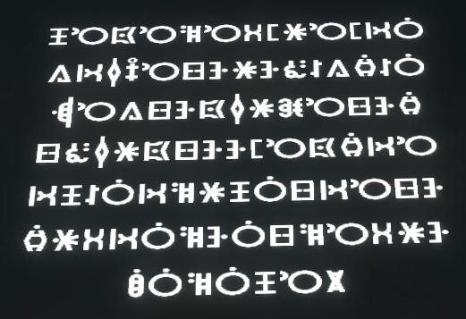
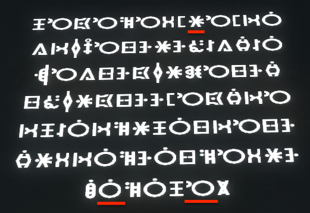

Image Credit
Image Credit
How to Use
Before beginning, consult the general steps outlined in this guide. This tool serves as an alternative to Ctrl-F on the GitHub page.
Prefix Mode
Enter the translation of the symbols in the text field. Remember that the riddles are read from right to left, top to bottom. The more letters you type, the further you can narrow down the list of achievements. When only one is left, you can stop translating the symbols.
Three-Symbol Mode
This is a more sophisticated way of translating the riddles. Instead of starting at the top right, you only have to translate three specific symbols. They are chosen in such a way that they narrow down the list to one achievement every time. These symbols are, in the order you have to enter them into the text field:
- The second from the bottom left.
- The sixth from the bottom left.
- The fifth from the top right.
In some cases, you can stop after one or two letters with only one achievement will left.
Example
Say you have the following screenshot:

You first find the symbols listed above:

The second symbol from the bottom left is A. The sixth symbol from the bottom left is E. The fifth symbol from the top right translates to O. You enter AEO into the search box. Now the only achievement left is Let Them Boogie, which corresponds to the screenshot.
Saved Achievements
By clicking the the icon of an achievement, you can add it to your list of completed achievements. They are shown under "Saved Achievements" in blue. The icon adds it to the pinned achievements, shown in gray. This way, you can track which achievements you already have and which ones you have to complete in order to meet the secret ending criteria.
To remove an achievement from the saved list, you can click on . Click "Clear" to remove all achievements at once from the list.
Shortcuts
Press Enter to pin the first search result and Shift+Enter to mark it as completed. This works in both modes.
Contact
For bug reports, feature requests or general questions you can create an issue on GitHub and I will be happy to assist. Changes in the form of pull requests are also welcome.